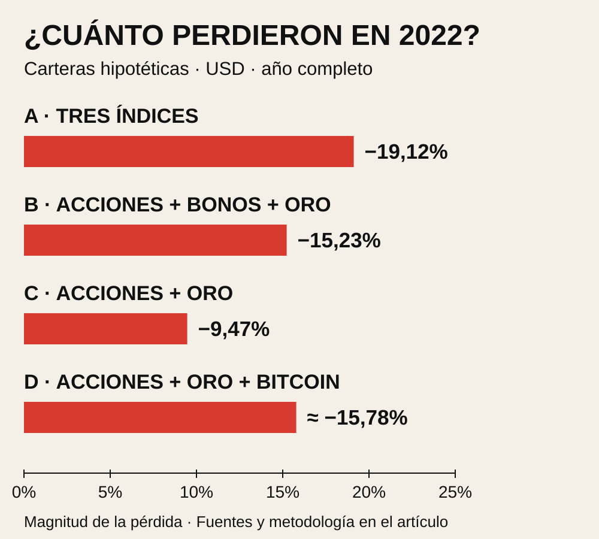

Compraste un fondo del S&P 500. Después añadiste uno del Nasdaq y otro del Dow Jones. Cientos de empresas, tres índices famosos, tres líneas distintas en la aplicación. Bastante diversificado, ¿no?
Entonces llega una caída y las tres líneas se ponen rojas. No exactamente igual, pero sí lo suficiente como para que aparezca la pregunta incómoda: ¿para qué demonios compré tres cosas si todas hacen lo mismo cuando necesito que hagan algo diferente?
El problema puede estar en lo que estabas contando. Contabas fondos. El mercado estaba contando riesgos.
TRES ENVASES NO SON TRES CONTENIDOS
Un fondo es un recipiente. Lo que determina tu exposición son los activos que lleva dentro y cuánto pesa cada uno. Comprar dos recipientes distintos con muchos ingredientes repetidos no duplica la variedad: aumenta tu cantidad de esos ingredientes.
El S&P 500 reúne grandes empresas estadounidenses y da más peso a las de mayor valor bursátil ajustado por las acciones disponibles para invertir. El Nasdaq-100 —el índice que sigue QQQ, distinto del Nasdaq Composite— reúne grandes compañías no financieras cotizadas en Nasdaq. El Dow selecciona treinta grandes empresas y pondera por el precio de sus acciones, no por el tamaño de la empresa.
Las reglas son diferentes. Los universos se solapan. Apple, Microsoft y Nvidia, por ejemplo, están en los tres a la fecha de publicación. Y aunque una empresa aparezca solo en uno, puede depender de los mismos tipos de interés, del mismo apetito por el riesgo o del mismo ciclo económico que las demás.
Por eso tampoco basta con contar nombres repetidos: importa cuánto dinero has puesto, directa e indirectamente, en cada uno. Imagina dos fondos que pesan la misma empresa al 6% y al 10%. Si repartes tu cartera a medias entre ambos, tienes un 8% en esa empresa: 50% × 6% + 50% × 10%. Es un ejemplo inventado para mostrar el cálculo, no los pesos actuales de ningún fondo.
La SEC advierte precisamente de esto: incluso con varios fondos conviene mirar sus principales posiciones para comprobar qué diversificación aportan. La etiqueta comercial no hace ese trabajo por ti.
PUEDES TENER MUCHAS EMPRESAS Y UNA SOLA GRAN APUESTA
Esto no convierte al S&P 500 en una mala herramienta. Un fondo amplio reparte mucho mejor el riesgo de que una empresa concreta se arruine que comprar una sola acción. Esa diversificación existe y es valiosa.
Lo que no hace es convertir una cartera de acciones en una cartera de acciones, deuda pública, liquidez y otros activos. Añadir Nasdaq puede aumentar la inclinación hacia grandes compañías de crecimiento. Añadir Dow puede cambiar sectores y pesos. Son cambios reales, pero sigues teniendo una cartera de renta variable concentrada en grandes empresas estadounidenses.
Aquí ayuda distinguir dos riesgos. El específico es que una empresa pierda su licencia, descubra un fraude o lance un producto desastroso. El sistemático es que empeoren las condiciones para buena parte del mercado: recesión, financiación más cara, ventas forzadas o una revisión general de cuánto merece pagarse por el futuro.
Puedes repartir muy bien el primero y seguir expuesto al segundo. Incluso tener acciones de países distintos reduce determinadas concentraciones sin impedir que todas sufran cuando se deteriora la economía mundial.
¿POR QUÉ SE PONEN DE ACUERDO JUSTO CUANDO TODO VA MAL?
Imagina un inversor que compró acciones y oro con dinero prestado. Las acciones caen, la garantía vale menos y su financiador le exige efectivo. Puede vender oro, aunque siga pensando que el oro tiene una buena historia. No vende lo que dejó de gustarle: vende lo que puede convertir en dinero.
Multiplica ese mecanismo por muchos inversores. Añade fondos que reciben peticiones de retirada, gestores que reducen exposición y compradores que desaparecen. Activos con usos muy distintos pueden caer juntos porque comparten propietarios que necesitan liquidez.
Eso ocurrió en marzo de 2020. El S&P 500 perdió aproximadamente un 33,9% entre los cierres del 19 de febrero y el 23 de marzo. El World Gold Council documentó que también se vendía oro para obtener efectivo y cubrir pérdidas en otros mercados. Tener otro activo no lo hacía inmune a la liquidación.
La palabra técnica es correlación: cuánto tienden a moverse juntos los rendimientos de dos inversiones. No significa que se muevan la misma cantidad, ni demuestra que una cause la otra. Y, sobre todo, no es una propiedad permanente como el número de serie de una botella. Cambia con el periodo y las condiciones del mercado.
Una correlación baja en tiempos tranquilos puede ser bastante menos útil durante un susto. Pero tampoco se vuelve automáticamente uno entre todos los activos. Diversificar puede amortiguar una caída sin evitarla. Que dos inversiones caigan a la vez no demuestra, por sí solo, que combinarlas haya sido inútil.
COVID: EL CIERRE DEL AÑO ESCONDE LA PELÍCULA
2020 enseña otra trampa. El S&P 500 terminó el año con una rentabilidad total del 18,40%. El ETF de Treasuries estadounidenses a siete-diez años IEF ganó aproximadamente 9,8%, y el ETF de oro GLD ganó 23,68% sobre su valor liquidativo. Si solo miras diciembre, cuesta reconocer el pánico de marzo.
Una simulación que empezara el año con 50% S&P 500, 40% IEF y 10% GLD, sin rebalancear dentro del año, habría ganado aproximadamente 15,49%. Menos que el S&P 500 solo. Ese resultado final no dice cuánto cayó durante marzo, ni cuánto miedo tuvo que soportar su propietario para llegar a diciembre.
Para medir la protección en el desplome necesitaríamos series diarias con las mismas fechas y calcular la caída desde el máximo de cada cartera. Aquí no presentamos el rendimiento anual como si fuera esa caída. Son preguntas distintas: ¿dónde terminaste? y ¿qué camino tuviste que atravesar?
2022: CAMBIA LA CRISIS Y CAMBIA EL AMORTIGUADOR
En 2022 el golpe fue distinto. La inflación y la subida de tipos dañaron tanto las valoraciones de las acciones como el precio de los bonos existentes. Los Treasuries podían seguir ofreciendo una promesa de pago creíble y, aun así, perder valor en el mercado. Es el mecanismo que explicamos en por qué baja un bono cuando suben los tipos.
Hagamos una comparación reproducible. Son carteras hipotéticas con rendimientos históricos, no cuentas reales de inversores ni propuestas de inversión. Cada una empieza el año con los pesos indicados y mantiene sus posiciones, sin aportaciones, retiradas ni rebalanceo durante el año.
| Cartera y pesos iniciales | Resultado | $10.000 terminan en |
|---|---|---|
| A · Un tercio S&P 500, un tercio Nasdaq-100, un tercio Dow | −19,12% | $8.088 |
| B · 50% S&P 500, 40% IEF, 10% GLD | −15,23% | $8.477 |
| C · 50% S&P 500, 50% GLD | −9,47% | $9.054 |
| D · 50% S&P 500, 40% GLD, 10% Bitcoin | ≈ −15,78% | ≈ $8.422 |

La cartera A tenía tres índices y seguía teniendo un 100% en acciones. Sus componentes perdieron un 18,11%, un 32,38% y un 6,86%, respectivamente. Diferentes intensidades, una misma dirección. Repartir a partes iguales entre fondos tampoco repartió por igual el riesgo.
La B sí combinaba contratos distintos, pero el IEF perdió un 15,23% y GLD un 0,82%. Amortiguó el resultado frente a A; no evitó las pérdidas. La C sufrió menos porque el oro perdió mucho menos que las acciones. Eso no convierte un 50% en oro en una solución universal: estamos viendo un año concreto, con el beneficio de conocerlo después.
Y la D muestra por qué “acciones, oro y crypto” no equivale automáticamente a protección. Sustituir diez puntos de oro por Bitcoin empeoró el resultado de ese año: Bitcoin perdió alrededor del 64%. Ser tecnológicamente distinto no obliga a comportarse financieramente distinto cuando se retira el apetito por el riesgo.
Hay otra limitación decisiva: B, C y D tienen menos acciones que A. Parte de la diferencia viene de reducir esa exposición, no de una combinación mágica. Para evaluar una estrategia completa habría que comparar también volatilidad, caídas máximas, recuperación, costes y rentabilidad en muchos periodos. Dos crisis no bastan para coronar una cartera.
DIVERSIFICAR MEJOR EMPIEZA POR CAMBIAR LAS PREGUNTAS
No existe una lista de activos que gane en todos los escenarios. Sí hay formas de comprobar si cada nueva pieza aporta algo distinto o simplemente vuelve a comprar tu apuesta favorita.
1. Mira a través del fondo
Revisa posiciones, pesos, sectores, países y reglas del índice. Un fondo global amplio puede reunir mercados que tres fondos estadounidenses repiten; tampoco está necesariamente equilibrado entre países. Y que un ETF cotice en euros no significa que cubra el riesgo de divisa de sus activos.
2. Separa empresas de contratos
Una acción participa en los beneficios de un negocio. Un bono promete pagos. El oro no genera un flujo de caja contractual. La liquidez permite atender gastos sin vender inversiones en una caída. Sus motores son distintos, aunque a veces sus precios coincidan.
Dentro de los bonos también importa qué has comprado: deuda pública de calidad, deuda corporativa o deuda de alto riesgo; vencimientos cortos o largos. Un fondo de bonos de empresas frágiles puede sufrir junto con las acciones. Un bono largo es mucho más sensible a cambios de tipos que uno corto comparable. “Renta fija” es una etiqueta demasiado grande para decidir qué protección ofrece.
3. Piensa en crisis diferentes
Pregunta qué le pasaría a cada posición ante una recesión, inflación persistente, subidas de tipos o una necesidad urgente de efectivo. No hace falta predecir cuál llegará. El ejercicio sirve para descubrir si todas tus inversiones necesitan el mismo mundo para funcionar.
4. Cuenta el riesgo, no solo los porcentajes
Un 10% en un activo muy volátil puede influir más en las oscilaciones de una cartera que otro 10% en uno estable. Y si una posición crece mucho, sus pesos cambian. Rebalancear significa revisar y, cuando corresponda, devolver la mezcla a unos pesos definidos: también implica costes e impuestos. No garantiza mejores rendimientos.
5. Incluye tu vida fuera del broker
Si tu salario, tu vivienda y tu negocio dependen del mismo país o sector, tu patrimonio ya tiene una concentración que la aplicación no muestra. El dinero necesario para un gasto próximo tampoco cumple la misma función que el destinado a un horizonte de décadas.
La eficiencia no consiste en añadir veinte productos. Consiste en obtener la exposición buscada con el menor solapamiento involuntario, coste y complejidad que puedas entender. Un fondo puede diversificar más que cinco. Cinco activos pueden depender de una sola historia.
LA PREGUNTA QUE TU CARTERA DEBERÍA PODER CONTESTAR
La próxima vez que añadas un fondo, la pregunta útil no es “¿cuántas empresas trae?”. Es “¿qué riesgo nuevo incorpora y qué dependencia existente reduce?”. Quizá la respuesta sea que aumenta una exposición que deseas. Perfecto: eso es una decisión consciente. No hace falta llamarla diversificación para que sea legítima.
Lo peligroso es creer que has contratado varios salvavidas cuando has comprado varias entradas al mismo barco. Diversificar no promete que nunca se hunda nada. Busca que tu futuro no dependa de que un único barco llegue a puerto.
AUDITABLE, SIEMPRE
DATOS, SUPUESTOS Y FUENTES
Rentabilidad de cartera = suma de cada peso inicial multiplicado por el rendimiento del componente. Periodo: cierre de 2021 a cierre de 2022; para el ejemplo de 2020, cierre de 2019 a cierre de 2020. Valores finales redondeados desde resultados sin redondear. USD nominales, sin ajustar por inflación.
Las acciones se representan mediante índices de rentabilidad total con dividendos reinvertidos, no ETFs comprables sin costes: S&P 500 (2020: +18,40%; 2022: −18,11%), Nasdaq-100 (2022: −32,38%) y Dow (2022: −6,86%). IEF y GLD utilizan rendimientos de valor liquidativo, que incorporan gastos del producto: IEF (+9,8% en 2020, redondeado por el proveedor; −15,23% en 2022), GLD (+23,68%; −0,82%). Bitcoin utiliza la variación anual aproximada del precio publicada por Fidelity (−64% en 2022), sin rendimiento por préstamo ni staking. D es, por tanto, aproximada.
No se incluyen impuestos personales, comisiones de negociación, spreads, costes de custodia ni gastos de los vehículos que replicarían los índices. No se simula rebalanceo dentro del año. Cada año se evalúa por separado con los pesos iniciales indicados. Las mezclas se eligieron para contrastar mecanismos, no mediante una optimización ni un análisis exhaustivo. Los resultados anuales no miden la caída máxima dentro del periodo. Fuentes consultadas el 5 de octubre de 2026.
- SEC / Investor.gov — Asignación de activos y diversificación: solapamiento, categorías y horizonte.
- State Street — SPY, DIA y Invesco — QQQ: índices, reglas y posiciones.
- S&P Global — U.S. Equities, mayo de 2020: caída del S&P 500 entre febrero y marzo.
- Nasdaq — Presentación del Nasdaq-100, marzo de 2022: rendimiento total del S&P 500 en 2020.
- S&P DJI — Junio de 2024 y octubre de 2024: rendimientos totales de S&P 500 y Dow en 2022.
- Invesco — QQQ Quarterly Outlook: Nasdaq-100, rendimiento total de 2022.
- iShares — IEF y historial anual: Treasuries a siete-diez años, 2020 y 2022.
- State Street — Gold: The Case for Portfolio Construction, enero de 2023: tabla histórica de GLD.
- World Gold Council — 19 de marzo de 2020: interpretación de las ventas de oro y liquidaciones.
- Fidelity — An Introduction to Bitcoin: rendimiento aproximado de Bitcoin en 2022.
- FMI — Crypto Prices Move More in Sync With Stocks: correlación y contagio en periodos de tensión.
EXPLICAMOS. NO ASESORAMOS. Los pesos son ejemplos para entender el mecanismo, no recomendaciones de cartera.